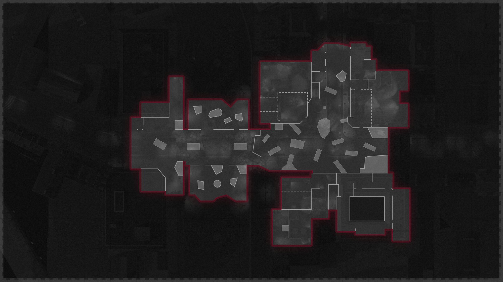

Easter Egg Song
Interact with 3 Tapes:
-Electronics Store: Aisle Shelf
-Factory Stairs: Shelf
-Blasted Suite: Next to Flower Pot
Pack-A-Punch
Turn on the Power
-Kill the Tempest in East Berlin Streets
-Interact with the Power Switch
-Kill the Second Tempest in Sewer Access or Switch Control Room
-Return to the Power Switch and Place the Fuses
Go to *Location* and Interact with the Pack-A-Punch
Kill the Fire Mini-Boss
Bunny Easter Egg
Pick up all 6 Bunny Parts
-Head: Alley
-Body: Department Store
-Arm: Sewer Access
-Arm: Hotel Room 304
-Leg: Bar
-Leg: Grocery Store
Live through the Lockdown and Choose your Reward
-1: Large Reward Crate
-2: Rewards Crate
-3: Golden Chest
If you don't complete it in time you get kicked out and you get a Max Ammo, Carpenter, and a Bonus Points drop
Klaus Easter Egg
Place the Microwave Dish on the Upgrade Station in Garment Factory
Pickup the Battery by Killing the Panzer
Place the Battery on Klaus in Safe House
Brain Rot a Zombie in Hotel Room 305, then pick up Klaus' Hands
Give Klaus his Hands back to Activate Him
Find the Microwave Dish by Digging in the Death Strip
Tell Klaus to go to the Upgrade Station in Garment Factory once he Kills enough Zombies (The Screen will turn Green)
Tell Klaus to go up to Panels around the Map, he will Melee them, one of them will have a Floppy Disk
-Blasted Suite
-West Berlin Street
-Maintenance Tunnel
Have Klaus go into the Upgrade Station and Insert the Floppy Disk (You can do this more than once)
Headgear
Electronic Boards: Shoot the Box with a Green Light Above the Ticket Window in Ghost Station with the Wonder Weapon
Antenna: Shoot the Radio Tower on the Apartment Rooftop
Transistor: Shoot the Radio in Electronics Store
Craft the Hacking Helm on Klaus while he's in the Chair
Free CRBR-S Easter Egg
Build and Activate Klaus
Tell Klaus to stand in front of the Locker with a 0 above it
Pick up the Blacklight after he breaks the locker open
Go to the 1, 2, and 3 symbols on the wall and look around for the safe combination
-1: Garment Factory
-2: Service Passage
-3: Grocery Store
Enter the Combination into the Safe in Room 305
Main Quest
Turn on the Power and Activate the Pack-A-Punch
Tell Klaus to go to the Brick wall in Sewer Access, he will Punch it open
Shoot a hole in the Wall with the Blaser Upgrade on the Wonder Weapon
Shoot the Machine Next to the Circular Portal Frame to get the Essence Lure
Pick up all 3 Canisters and Place them in the Green Essence Harvesters around the map
Throw a Lure near one of the Essence Harvesters to spawn Tempests
Kill all Tempests Close to the Harvester to Fill it
Take the Charged Canisters back to the Secret Lab and Place them back Down
Switch the Train Tracks, a Normal Car will Go By
Tell Klaus to stand in the Tracks when he has the Hacking Helm, he will stop it
Grab the Keycard from Rico's body
Grab the Warhead from the Box
Place the Warhead on the Missle
**PREPARE FOR THE BOSS FIGHT**
Go to the Safehouse and Interact with the Computer to Fire the Satellite
Kill the Megaton and Pick Up the Uranium
Craft the Uranium at one of the Workbenches in the Green Tents
Place both Uranium Devices at each end of a Zipline
Place the result on the Missle
Repeat Process
Boss Fight 